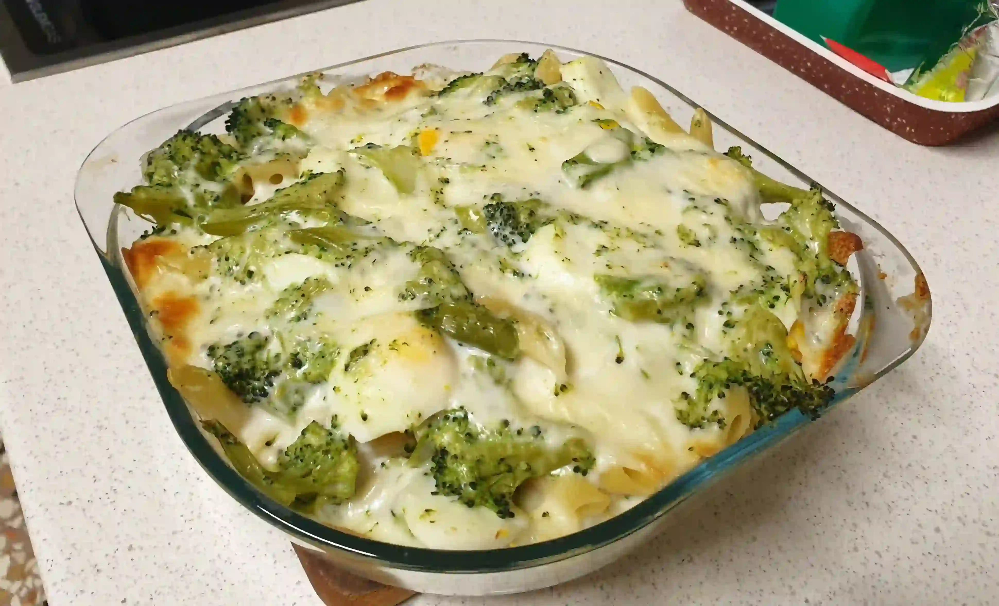

Baked pasta with broccoli, boiled eggs and scamorza cheese

- ⏲️ Prep time: 15 min
- 🍳 Cook time: 20~30 min
- 🍽️ Servings: 4
Ingredients
- 500g pasta
- 500g broccoli
- 4 eggs
- 200g scamorza cheese
- 400g béchamel
- sage (optional)
- parmesan cheese (optional)
Directions
- Boil water and add salt (a handful for every liter), put pasta inside.
- Boil broccoli and eggs for 10 minutes.
- While everything is boiling dice scamorza cheese, prepare a pan.
- Put a layer of béchamel.
- Put a layer of pasta.
- Put a layer of broccoli, diced scamorza cheese, pepper, salt.
- Go to step 4 and repeat until ingredients end.
- Add sage leafs on top (optional).
- Put the pan inside the (preheated) oven at 180°C for 15~20 minutes.
- End with 5~10 minutes of cooking with the grill function.
Contribution
Davide Costa - website,
Monero: 4BD4REH2QyC5dhb7W4hYUnD3poGgpg9TGVrn1iRcdkQzBrm44eAre1GcfvsPakPF1thy2CBcBqZmzCLRsU6gZftY1Bg23f9
Recipe tags: italian, pasta, broccoli, cheesefare